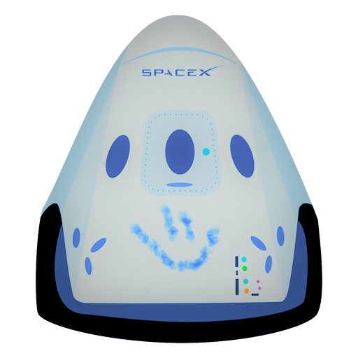

Hyperblog
Tu blog increíble
Este es el título principal del Post
Este es el párrafo de inicio donde vamos a explicar las cosas increibles que se pueden hacer con ramas.

Los Blogs son la mejor forma de compartir información y tus ideas además de pensamientos, Mucho mas que ir a conferencias o salir en youtube. Excepto si eres un rockstar. Pero no lo eres.
Suscríbete y dale like.